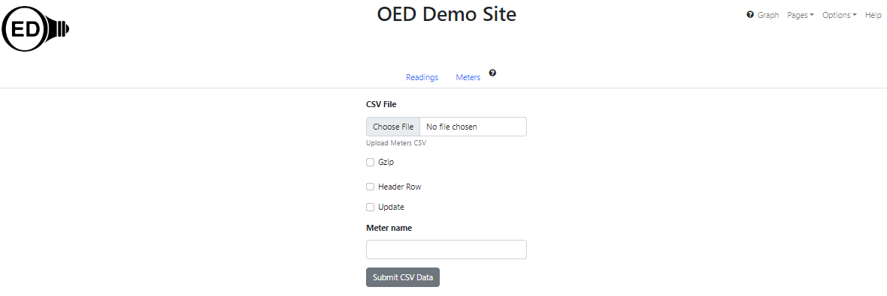

OED Documentation
Meter Import
Version V1.0.0
Documentation overview
Admin documentation
Information
Site Management
Data Acquisition
Site Installation
User documentation
Documentation versions for this page
These features are only available to select people who oversee the OED site (called admins) so this information is not usually of interest to a general user.
Overview
This page describes the process of importing meters into OED via a CSV file. See the general CSV import page for an overview and information common to all CSV imports.
Usage
The information needed to upload meters is the same whether done via the web page or direct file upload. The web page looks as follows: 
Required and optional information
- The user name and password is required in the direct file upload as described on the general CSV import page. It is automatically provided on the web page upload since you are logged in.
- CSV file ("Choose File" button on web page;
csvFileparameter on direct file upload): This gives the location of the CSV file containing the meter information. On the web page it is via a file picker popup. See below on the file format. - Is CSV file in gzip format ("Gzip" checked if yes on web page;
gzipparameter on direct file upload with default value of yes. ): Note this is the Gnu zip format and not a standard .zip file format. Note that gzip files are smaller in size for upload and also have internal validation to protect against corruption so they are preferred. - Does CSV have a header row ("Header Row" checked if yes on web page;
headerRowparameter on direct file upload): Is the first row of the CSV file header information and not an actual meter (see below for format). The default value is no. - Is this an update ("Update" checked if yes on web page;
updateparameter on direct file upload): Each row is new information for the meter so it will be update with any provided values and others are left as currently set. The default value is no. - Meter name ("Meter name" input box on web page;
meterNameparameter on direct file upload): This is only used if you want to change the name of a meter (not identifier). The meter name provided is used as the name to update and the meter name value in the CSV is used as the new name. Note you can only update a single meter name at a time meaning that the CSV can only have one row of meter information.
Meter CSV file format
Meters in OED store a lot of information about them so there are many possible values. If the CSV file has a header row then it should be:
name,url,enabled,displayable,type,timezone,gps,identifier,note,area,cumulative,reset,reset start,reset end,gap,variation,duplicates,timesort,end only,reading,start time,end time,previous end,unit,default graphic unit,area unit,reading freq.
Currently OED does not use the header row so the names are not crucial but OED may do so in the future so using these column header names is a good idea. Detailed information on the columns/values are described on the admin meter creating page. The order of the items is somewhat different than those specified for the header row above. Each following line should contain the values for one meter in exactly the order listed for the header row example above. The column can be blank where the default value for OED will be used if the meter creation information does not indicate it is required. Information needed for CSV upload compared to the meter creation page information are:
- When providing a unit one should use the name, e.g., "kWh".
- When providing a value for "type" one should use ones in the drop down menu on the meter creation page, e.g, "OBVIUS". This is case-sensitive.
- When providing a value for "timesort" use the dropdown menu options of "increasing" and "decreasing". This is case-sensitive. If no value is provided then the meter is created with the default of increasing.
- When inputting the area unit use "feet" or "meters" (Do not include "sq.").
- When providing a value for the "timezone" use the name from the dropdown menu, e.g., "Pacific/Galapagos".
Many spreadsheet programs automatically format text that looks like a time or date into a different format. In general, to avoid this, one should set those fields to be text rather than a time or date. If this is not done then you will likely get a format error or unexpected data when you upload a CSV file.
If you upload a CSV that has missing or incorrect values then it could cause issues. However, some values will be noted with red boxes when you edit this meter and then it can be corrected. For example, if you put in an area but not a unit this will happen. If you have any doubts then it is a good idea to look at the values on the meters page to verify they are what you wanted.
Sample file
Below are the lines for a CSV meter import file with a header row and available in this meters.csv file. It will import two meters (Meter 1 and My Place (identifier) or Meter 2 (name)) where the meters are not enabled but are displayable. Please note that "3,5" is a pair of values separated by a comma that would be in a single column of the CSV file and input without the quotes, i.e., 3,5. The quotes are added when such a CSV is saved to make it clear that the comma is not a new column. Most values that are optional and unspecified so the default values are used for Meter 1 but are provided for the second meter. Also note that values that are "yes" on dropdown menus for meter creation must be "true" and values that are "no" must be "false" in this file (but not the curl command). This file can be loaded using the curl command of:
curl https://myoedserver.com:3000/api/csv/meters -X POST -F 'headerRow=yes' -F 'gzip=no' -F 'email=csvuser@myorg.com' -F 'password=csvuserpassword' -F 'csvfile=@meters.csv'
assuming the shown URL, user email and password. (See admin reading sample files for more information on URL, email and password.) You need to reload the OED web page so your browser is aware of the new meters after a curl import but you will get an empty graphic if used since they don't have any data yet.
name,url,enabled,displayable,type,timezone,gps,identifier,note,area,cumulative,reset,reset start,reset end,gap,variation,duplicates,timesort,end only,reading,start time,end time,previous end,unit,default graphic unit,area unit,reading freq.
Meter 1,,false,yes,other,,,,,,,,,,,,,,,,,,,Electric_Utility,,,
Meter 2,127.0.0.0,false,true,obvius,Pacific/Galapagos,"3,5",My Place,special note,123,true,true,11:50,12:10,5,10,2,decreasing,true,,,,,Electric_Utility,kWh,meters,13:00
Return messages
What follows are the common messages returned from a meter upload along with their meaning:
<h1>SUCCESS</h1>Successfully inserted the meters.-
<h1>FAILURE</h1>CSVPipelineError: Failed to upload meters due to internal OED Error: Meter name of pipe41 seems to exist when inserting new meters and got DB error of: duplicate key value violates unique constraint "meters_name_key"
This normally happens when the name (or similarly identifier) of the meter already exists. It may be the case that you wanted to update this meter but did not specify this. -
<h1>FAILURE</h1>CSVPipelineError: Failed to upload meters due to internal OED Error: Meter name of pipe42 does not seem to exist with update for meters and got DB error of: No data returned from the query.
Request indicated to update meter(s) but at least one did not exist. All meters must exist on update. -
<h1>SUCCESS</h1>Successfully inserted the meters.<h1>FAILURE</h1>CSVPipelineError: Failed to upload meters due to internal OED Error: Meter name provided (pipe40) in request with update for meters but more than one meter in CSV so not processing
When you want to change a meter name you specify the name in the request as well as the CSV file. It then uses the name in the request to find the meter and the value in the CSV as the new meter name. However, you can only have a single meter in the CSV file for this to work. This indicates more than one meter was provided. - You can get a variety of error messages if the gzip is improperly set. These include "TypeError", "invalid message format" and others. This is because OED is incorrectly reading the CSV file and receives garbled information.
Details
See meters after CSV uploaded via direct file upload
You need to reload your web browser pages as described here.